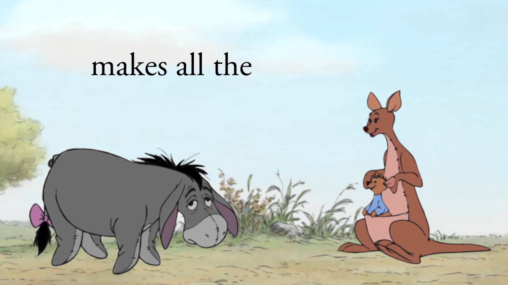

Kanga & Roo are 2 fictional characters that belong to Winnie the Pooh. Kanga is the sole female character in Winnie-the-Pooh and she is 30 inches tall. She is the mother of a young joey (baby kangaroo) named Roo, who is nearly 10 inches tall. Kanga carries her family in her pocket and is the fastest amongst all animals in the forest. She takes utmost care of Roo and shall often warn Roo of possible dangers involved in the activities that Roo undertakes. She often says "Now now Roo, you mustn't do that dear," to which Roo mostly replies "But moma!" Kanga & Roo live in the Northern section of the 100 Acre Wood. Every Tuesday Kanga goes to Pooh’s house and tries to teach him how to jump. Roo is the youngest member of the 100 Acre Wood, he loves milk and most other eateries expect for the extract of malt. He really likes the game Poohsticks and likes playing with Tigger too.
